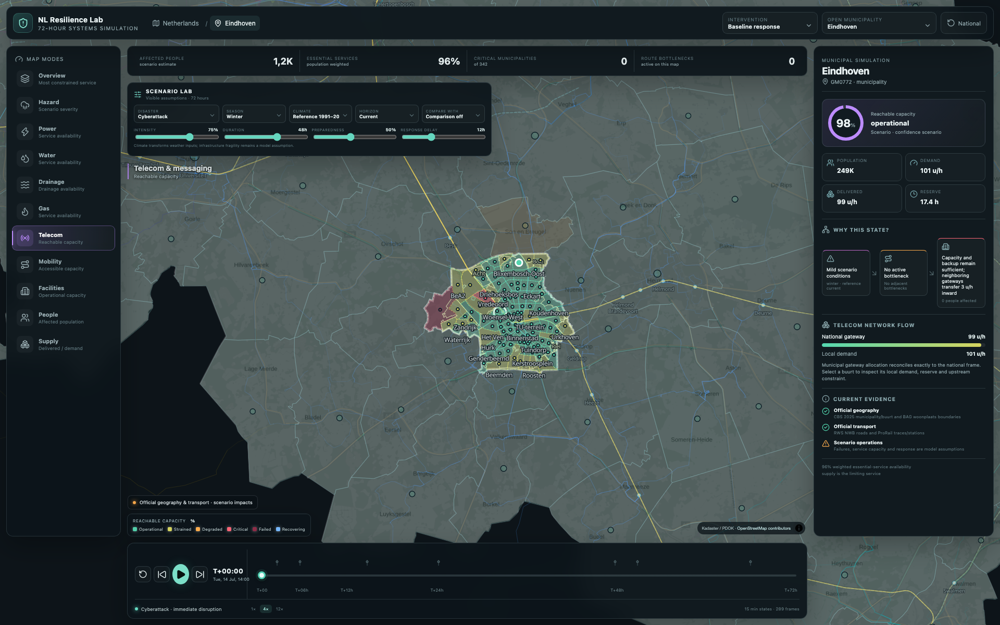
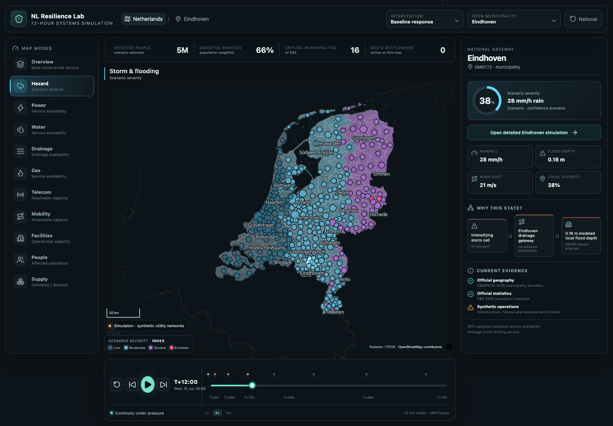

First 72 hours · The Netherlands
When power fails,
what fails next?
A transparent scenario laboratory for the Netherlands’ first 72 hours of cascading disruption.
A prolonged outage quickly becomes a water, telecom, mobility, care and supply crisis. Teams must prioritize scarce resources while conditions keep changing.
Municipal crisis teams, safety regions, infrastructure partners and facilitators of emergency tabletop exercises.
A national-to-neighbourhood map to choose a disaster, scrub T+00–T+72, switch system layers, compare interventions and inspect the evidence behind each result.


National impact · T+12municipalities
states
presets
catalogue
How I tested whether it could work
Briefing → requirements. Translated the Eindhoven municipality and safety-region 72-hour case into a dependency model.
Working prototype. Exercised scenarios, timeline, layers, geographic scales and intervention comparisons end to end.
Verification. 147 automated model/UI tests plus generated-data checks for 342 municipalities and 14,729 neighbourhoods.
Most important learning
Realism is not “more detail.” It is making clear what is observed, what is modelled and what is still unknown. Reproducible does not automatically mean predictive.